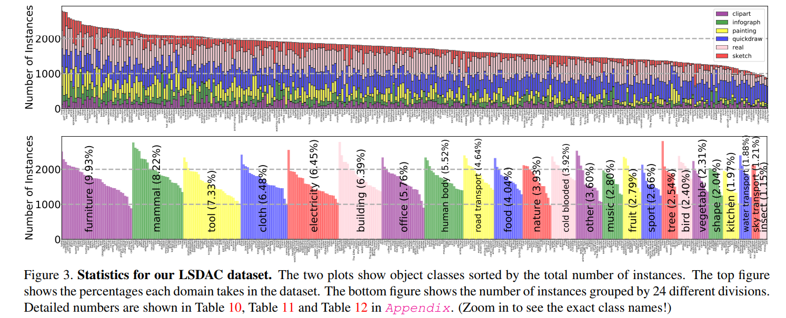
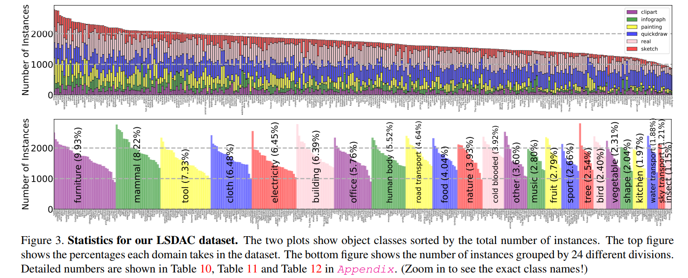

Moment Matching for
Multi-Source Domain Adaptation
Abstract
Conventional unsupervised domain adaptation (UDA) assumes that training data are sampled from a single domain. This neglects the more practical scenario where training data are collected from multiple sources, requiring multi-source domain adaptation. We make three major contributions towards addressing this problem. First, we propose a new deep learning approach, Moment Matching for Multi-Source Domain Adaptation (M3SDA), which aims to transfer knowledge learned from multiple labeled source domains to an unlabeled target domain by dynamically aligning moments of their feature distributions. Second, we provide a sound theoretical analysis of moment-related error bounds for multi-source domain adaptation. Third, we collect and annotate by far the largest UDA dataset with six distinct domains and approximately 0.6 million images distributed among 345 categories, addressing the gap in data availability for multi-source UDA research. Extensive experiments are performed to demonstrate the effectiveness of our proposed model, which outperforms existing state-ofthe-art methods by a large margin.

 

Download
| Clipart | Infograph | Painting | Quickdraw | Real | Sketch | |
|---|---|---|---|---|---|---|
| Data | clipart.zip | infograph.zip(4.0G) | painting.zip | quickdraw.zip(439M) | real.zip(5.6G) | sketch.zip(2.5G) |
| Train | clipart_train.txt | infograph_train.txt | painting_train.txt | quickdraw_train.txt | real_train.txt | sketch_train.txt |
| Test | clipart_test.txt | infograph_test.txt | painting_test.txt | quickdraw_test.txt | real_test.txt | sketch_test.txt |
- We retain the clipart and painting subset as we are going to hold a domain adaptation challenge. These two domains will be used as the testing domain.
- Train/Test images are structured in folders as {domain}/{cateogory}/{object_id}.jpg (or .png)
Reference
If you find this useful in your work please consider citing:
@article{peng2018moment,
title={Moment Matching for Multi-Source Domain Adaptation},
author={Peng, Xingchao and Bai, Qinxun and Xia, Xide and Huang, Zijun and Saenko, Kate and Wang, Bo},
journal={arXiv preprint arXiv:1812.01754},
year={2018}
}
Fair Use Notice
This dataset contains some copyrighted material whose use has not been specifically authorized by the copyright owners. In an effort to advance scientific research, we make this material available for academic research. We believe this constitutes a fair use of any such copyrighted material as provided for in section 107 of the US Copyright Law. In accordance with Title 17 U.S.C. Section 107, the material on this site is distributed without profit for non-commercial research and educational purposes. For more information on fair use please click here. If you wish to use copyrighted material on this site or in our dataset for purposes of your own that go beyond non-commercial research and academic purposes, you must obtain permission directly from the copyright owner. (adapted from Christopher Thomas)